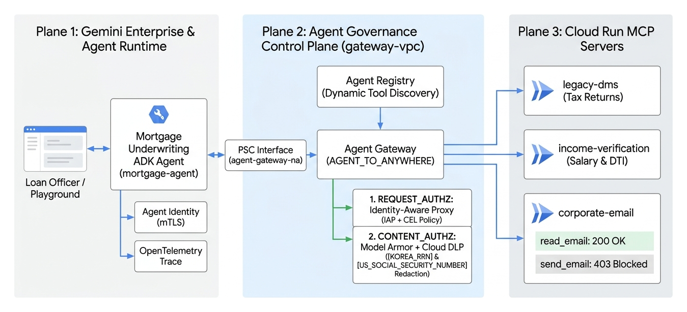
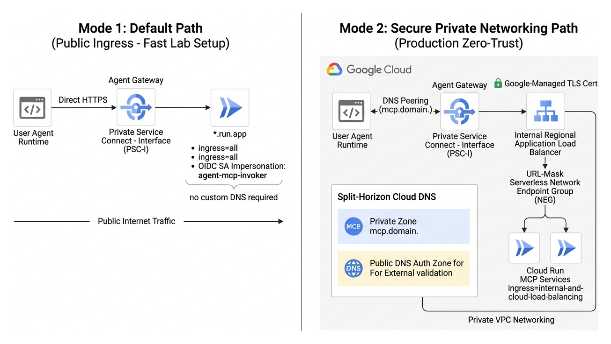
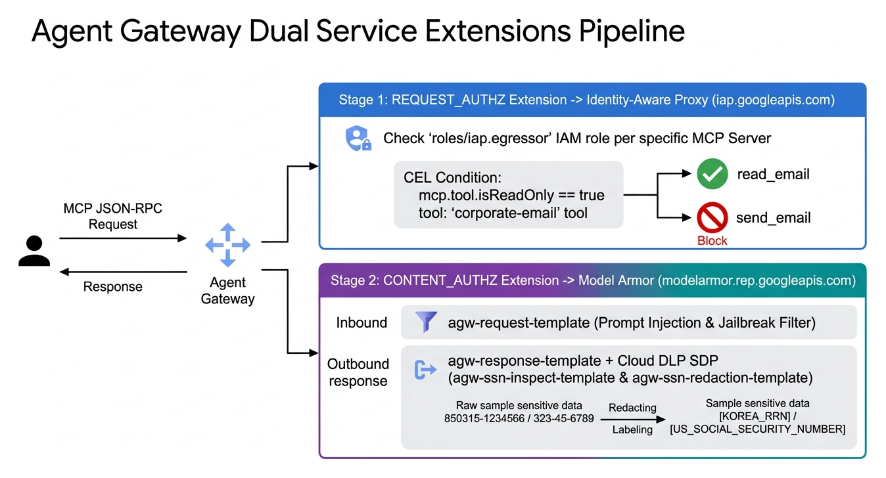
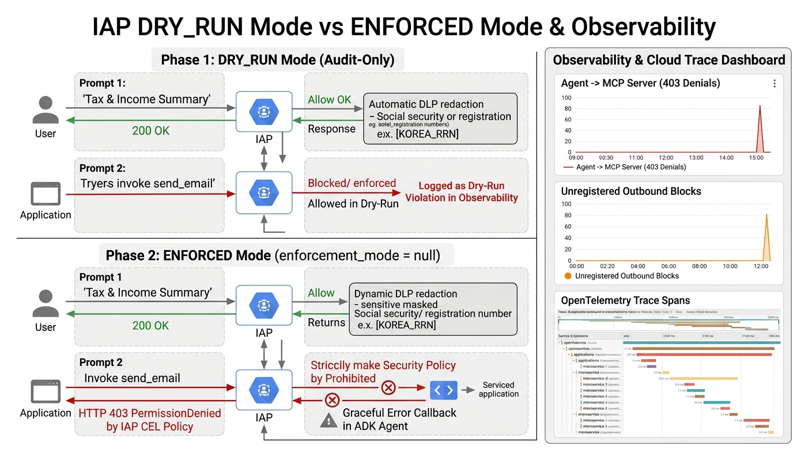
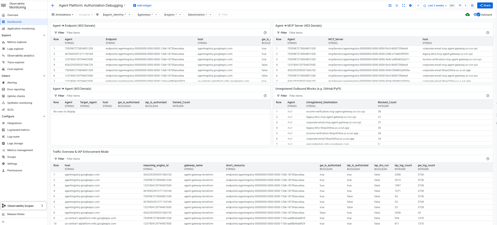

1. 아키텍처 개요: Agent Gateway와 IAP · Model Armor 기반 에이전트 거버넌스
에이펙스 금융그룹(Apex Financial Group)의 주택담보대출 심사 시나리오를 통해 자율형 AI 에이전트가 외부 MCP 도구와 통신할 때 발생하는 보안 위협을 이해하고, Agent Gateway의 이중 Service Extensions(IAP + Model Armor)로 이를 통제하는 3-Plane 아키텍처를 살펴봅니다.
1.1 왜 자율형 AI 에이전트에 전용 게이트웨이(Agent Gateway)가 필요한가요?
엔터프라이즈 환경에서 AI 에이전트가 단순 질의응답을 넘어 실제 업무(대출 심사, 고객 문서 조회, 소득 검증, 결과 통보)를 자동화하려면 Model Context Protocol (MCP)을 통해 다양한 백엔드 서버와 연결되어야 합니다. 하지만 에이전트를 내부 시스템에 직접 연결하면 다음과 같은 세 가지 심각한 거버넌스 공백이 발생합니다.
기존 네트워크 방화벽이나 Cloud Run IAM(roles/run.invoker)은 서버 단위(전부 허용 또는 전부 차단)로만 작동합니다. 에이전트에게 사내 이메일 MCP 서버 호출 권한을 부여하면, 안전한 지침 열람(search_emails, read_email)뿐만 아니라 승인되지 않은 외부 이메일 발송(send_email)까지 실행할 수 있게 됩니다.
레거시 문서 관리 시스템(DMS)이나 외부 신용/소득 검증 API는 한국 주민등록번호(KOREA_RRN)나 미국 사회보장번호(US_SOCIAL_SECURITY_NUMBER) 같은 원본 개인정보를 그대로 반환합니다. 이를 중간에서 마스킹하지 않으면 민감 정보가 LLM 프롬프트 컨텍스트와 대화 이력에 그대로 노출됩니다.
각 MCP 서버마다 개별적으로 인증, DLP 마스킹, 감사 로깅 코드를 구현하면 정책 일관성이 깨지고 유지보수 비용이 급증합니다. 또한 에이전트가 어떤 도구를 호출하다가 지연이나 차단이 발생했는지 엔드투엔드 트레이스(Trace)로 추적하기 어렵습니다.

1.2 실습 비즈니스 시나리오: 에이펙스 금융그룹 주택담보대출 자동 심사
이 코드랩에서는 에이펙스 금융그룹(Apex Financial Group)의 언더라이팅(대출 심사) 부서가 운영하는 주택담보대출 심사 에이전트(mortgage-agent)를 구축하고 보호합니다. 대출 심사관이 공동 신청자인 김민준(Minjun Kim) · 이서연(Seoyeon Lee) 부부의 2026년 신규 주택담보대출 적격 여부를 질의하면, 에이전트는 다음 3개의 MCP 서버를 순차적으로 호출합니다.
| MCP 서버 | 비즈니스 역할 및 샘플 데이터 | 노출된 MCP 도구 (Tools) | Agent Gateway 토폴로지 | 적용되는 보안/거버넌스 정책 |
|---|---|---|---|---|
legacy-dms |
레거시 문서 관리 시스템 김민준·이서연 부부의 2023·2024년 소득금액증명원( DOC-2024-KM-1040, DOC-2023-KM-1040) 및 원본 주민등록번호(850315-1234566, 870822-2345673)·SSN 보관
|
search_tax_returnsget_document_metadata
|
Client-Side (agent-egress)AGENT_TO_ANYWHERE
|
Model Armor + Cloud DLP (CONTENT_AUTHZ):응답 내 주민등록번호를 [KOREA_RRN]으로, SSN을 [US_SOCIAL_SECURITY_NUMBER]로 실시간 마스킹
|
income-verification |
외부 소득/재직 검증 API 김민준($142,000)·이서연($95,000) 재직 상태 및 2026년 가구 추정 DTI(28.4%) 산출 |
verify_income
|
Client-Side (agent-egress)AGENT_TO_ANYWHERE
|
Model Armor + Cloud DLP (CONTENT_AUTHZ):외부 API 요청·응답 페이로드 양방향 스캔 및 주민등록번호/SSN 자동 마스킹 |
corporate-email |
사내 이메일 및 언더라이팅 지침 서버 2026년 3월 개정 주택담보대출 최대 DTI 한도(45.0%) 사내 공지 메일( msg-002) 조회 및 외부 이메일 발송
|
search_emails (허용)read_email (허용)send_email (차단 대상)
|
Server-Side (cloud-run)self_managed 인그레스
|
IAP + CEL (REQUEST_AUTHZ):search_emails·read_email은 허용하되, send_email 호출은 거부 (DRY_RUN 테스트 후 ENFORCED 전환)
|
1.3 핵심 설계 포인트 1: 클라이언트 사이드(agent-egress) vs 서버 사이드(cloud-run) 게이트웨이
Agent Gateway는 보호 대상 MCP 서버의 위치와 소유권에 따라 두 가지 배포 토폴로지를 모두 지원합니다.
-
클라이언트 사이드 게이트웨이 (
google_managed.governed_access_path = "AGENT_TO_ANYWHERE"): 에이전트의 아웃바운드(Egress) 경로에 배치되는 정방향 프록시입니다. 타사 외부 SaaS API(income-verification)나 온프레미스 레거시 시스템(legacy-dms)처럼 서버 앞단에 직접 인그레스 프록시를 설치할 수 없는 경우, 에이전트가 나가는 길목에서 트래픽을 가로채어 DLP 마스킹과 감사를 수행합니다. -
서버 사이드 게이트웨이 (
self_managed.resource_uri): 우리가 직접 운영하는 Google Cloud 내부 워크로드(corporate-emailCloud Run 서비스) 앞단에 배치되는 역방향(Ingress) 프록시입니다. 어떤 에이전트가 들어오든 게이트웨이에서 중앙 집중식으로 신원을 검증하고 도구 단위 접근 제어(IAP CEL)를 강제합니다.

1.4 핵심 설계 포인트 2: Service Extensions 이중 보안 파이프라인 (IAP + Model Armor)
Agent Gateway는 Google Cloud의 Service Extensions 프레임워크를 통해 네트워크 데이터 플레인(Envoy)에서 두 가지 보안 엔진을 순차적으로 호출합니다.
-
REQUEST_AUTHZ단계 (Identity-Aware Proxy + CEL): 요청이 백엔드 MCP 서버에 도달하기 전에 실행됩니다. 에이전트 ID(Principal)를 검증할 뿐만 아니라, MCP JSON-RPC 본문을 파싱하여request.mcp.method와request.mcp.tool.name속성을 CEL(Common Expression Language) 정책으로 평가합니다. -
CONTENT_AUTHZ단계 (Model Armor + Cloud DLP): 요청 프롬프트와 MCP 도구의 응답(structuredContent)을 실시간으로 검사합니다. 프롬프트 인젝션/탈옥 시도를 탐지하고, Cloud Data Loss Prevention (Sensitive Data Protection)의InspectTemplate및DeidentifyTemplate을 호출해 한국 주민등록번호(KOREA_RRN)와 미국 SSN(US_SOCIAL_SECURITY_NUMBER)을 마스킹합니다.

2. 사전 요구사항 점검 및 GCP 실습 환경 초기화
Google Cloud 프로젝트 환경 변수(PROJECT_ID, PROJECT_NUMBER, ORG_ID, REGION)를 설정하고, 필수 CLI 도구(Terraform, Skaffold, uv)를 확인한 뒤 실습 소스 코드 저장소를 클론합니다.
2.1 필수 도구 및 권한 확인
본 가이드는 Google Cloud Shell(권장) 또는 로컬 터미널에서 실행할 수 있습니다. 실행하는 계정에 프로젝트 Owner(roles/owner) 또는 아래 관리자 권한이 부여되어 있어야 합니다.
- 필수 IAM 권한:
roles/run.admin,roles/aiplatform.admin,roles/dlp.admin,roles/modelarmor.admin,roles/iap.settingsAdmin,roles/iam.securityAdmin - 필수 CLI 도구:
gcloud,terraform (>= 1.5),skaffold,uv(Python 패키지 매니저),jq
Google Cloud Shell에는 gcloud, terraform, skaffold, jq가 기본 설치되어 있습니다. 만약 uv가 설치되어 있지 않다면 아래 명령어로 5초 만에 설치할 수 있습니다.
command -v uv >/dev/null 2>&1 || curl -LsSf https://astral.sh/uv/install.sh | sh
export PATH="$HOME/.local/bin:$PATH"
gcloud --version | head -n 1
terraform -version | head -n 1
skaffold version
uv --version2.2 프로젝트 환경 변수 설정
실습 전반에서 사용할 프로젝트 ID, 프로젝트 번호, 조직 ID(존재하는 경우), 그리고 배포 리전(us-central1)을 환경 변수로 설정합니다.
# 일반 고객사 환경에서는 본인의 프로젝트 ID를 직접 입력하거나 현재 gcloud 설정값을 사용합니다.
export PROJECT_ID=$(gcloud config get-value project)
export PROJECT_NUMBER=$(gcloud projects describe "${PROJECT_ID}" --format="value(projectNumber)")
# 조직(Organization) 하위 프로젝트인 경우 ORG_ID를 자동 조회하고, 무조직(No Organization) 프로젝트이면 빈 값으로 설정합니다.
export ORG_ID=$(gcloud projects get-ancestors "${PROJECT_ID}" --format='value(id)' | tail -n 1)
if [ "${ORG_ID}" = "${PROJECT_ID}" ] || [ "${ORG_ID}" = "${PROJECT_NUMBER}" ]; then
export ORG_ID=""
fi
export REGION="us-central1"
gcloud config set project "${PROJECT_ID}"
gcloud config set compute/region "${REGION}"
echo "PROJECT_ID : ${PROJECT_ID}"
echo "PROJECT_NUMBER : ${PROJECT_NUMBER}"
echo "ORG_ID : ${ORG_ID:-'(No Organization - Project Fallback Mode)'}"
echo "REGION : ${REGION}"
Vertex AI Agent Engine이 생성하는 에이전트 고유 ID(Agent Identity)는 조직이 있는 프로젝트에서는 principal://agents.global.org-${ORG_ID}.system.id.goog/resources/aiplatform/projects/${PROJECT_NUMBER}/locations/${REGION}/reasoningEngines/${ENGINE_ID} 형식을 사용하며, 조직이 없는 독립 프로젝트에서는 principal://agents.global.proj-${PROJECT_NUMBER}.system.id.goog/... 형식을 사용합니다. 본 실습의 스크립트와 Terraform 모듈은 두 환경을 모두 자동으로 감지하여 처리합니다.
2.3 실습 소스 저장소 클론 및 디렉터리 구조 확인
에이펙스 금융그룹 주택담보대출 심사 시나리오(김민준·이서연 부부 샘플 데이터 및 한국 주민등록번호 KOREA_RRN 마스킹 정책)가 구성된 실습 저장소를 클론합니다.
cd ~
rm -rf ~/agent-gateway-governance
git clone https://github.com/wxdxh/agent-gateway-governance.git ~/agent-gateway-governance 2>/dev/null || \
git clone -b governance https://github.com/wxdxh/agent-gateway-sgp.git ~/agent-gateway-governance
cd ~/agent-gateway-governance
ls -la클론된 저장소의 핵심 디렉터리 구조는 다음과 같습니다.
agent-gateway-governance/
├── skaffold.yaml # 3종 MCP 서버 컨테이너 일괄 빌드 정의
├── scripts/
│ └── grant_agent_mcp_egress.sh # Agent Identity에 Agent Gateway & Cloud Run IAM 권한 부여
├── src/
│ ├── legacy-dms/ # [MCP 서버 1] 소득금액증명원 조회 (주민등록번호·SSN 포함)
│ ├── income-verification-api/ # [MCP 서버 2] 소득/재직 검증 및 2026 DTI 비율 산출
│ ├── corporate-email/ # [MCP 서버 3] 사내 지침 메일 열람 및 이메일 발송(send_email)
│ └── mortgage-agent/ # [ADK 에이전트] 주택담보대출 심사 에이전트 및 배포 스크립트
└── terraform/
├── main.tf # Cloud Run, Agent Gateway, IAP CEL, 대시보드 오케스트레이션
├── variables.tf # KOREA_RRN/SSN 마스킹 및 배포 모드 변수 정의
└── modules/
├── agent-gateway/ # Client-Side(agent-egress) & Server-Side(cloud-run) 게이트웨이
├── model-armor/ # Cloud DLP Inspect/Deidentify 템플릿 + Model Armor 템플릿
├── iap/ # IAP CEL 정책(DRY_RUN / ENFORCED) 및 IAM 바인딩
└── agent-engine/ # Vertex AI Agent Engine 셸 및 서비스 에이전트 권한3. 3종 백엔드 MCP 서버 코드 분석 및 Skaffold 컨테이너 빌드
Model Armor(CONTENT_AUTHZ)가 MCP 도구 응답을 마스킹하기 위한 필수 조건인 FastMCP structuredContent 반환 구조를 살펴보고, Artifact Registry 저장소를 생성하여 3개 서버 이미지를 빌드합니다.
3.1 중요 설계 규칙: 왜 FastMCP 도구는 structured_content만 반환해야 하나요?
Python FastMCP 프레임워크에서 도구 함수가 일반 dict를 반환하면, MCP JSON-RPC 응답에는 두 개의 필드가 동시에 생성됩니다.
content: LLM이나 텍스트 클라이언트를 위해 JSON을 문자열로 직렬화한 일반 텍스트 블록 배열 (예:[{"type": "text", "text": "{...}"}])structuredContent: JSON 스키마 구조를 유지하는 키-값 객체
현재 Agent Gateway의 Model Armor(CONTENT_AUTHZ) 확장 프로그램은 MCP 도구 응답에서 structuredContent 필드 내부의 값만 검사하고 마스킹(Redaction)합니다. 만약 content 배열에 동일한 텍스트가 중복 포함되어 있으면, structuredContent는 마스킹되더라도 content 텍스트 블록을 통해 원본 주민등록번호(850315-1234566)와 SSN(323-45-6789)이 에이전트로 유출될 수 있습니다. 따라서 모든 MCP 도구는 반드시 ToolResult(content=[], structured_content=...)를 반환하여 content 배열을 비워두어야 합니다.
실제 src/legacy-dms/server.py 코드에 정의된 김민준·이서연 부부의 소득금액증명원 데이터와 ToolResult 반환 코드를 확인해 봅니다.
sed -n '48,140p' ~/agent-gateway-governance/src/legacy-dms/server.pyMOCK_DOCUMENTS: list[dict[str, Any]] = [
{
"document_id": "DOC-2024-KM-1040",
"applicant": "김민준 & 이서연 (Minjun Kim & Seoyeon Lee)",
"year": 2024,
"form_type": "소득금액증명원 / Form 1040 (Joint)",
"ssn": "323-45-6789",
"rrn": "850315-1234566",
"spouse_ssn": "321-54-9876",
"spouse_rrn": "870822-2345673",
"stated_income": 237000,
"filing_status": "Married Filing Jointly (부부 합산 신고)",
"summary": (
"2024년도 부부 합산 소득금액증명원(Joint Tax Return). 합산 신고 소득 $237,000 "
"(김민준 $142,000 + 이서연 $95,000). 주 신청자 주민등록번호(RRN): 850315-1234566, "
"SSN: 323-45-6789."
),
},
...
]
@mcp.tool
def search_tax_returns(applicant_name: str) -> ToolResult:
# Search the Legacy DMS for tax return filings by applicant name.
query = applicant_name.strip().lower()
matches = [
doc for doc in MOCK_DOCUMENTS if query in str(doc["applicant"]).lower()
]
# Model Armor CONTENT_AUTHZ가 마스킹할 수 있도록 content=[]로 비우고 structured_content만 반환합니다.
return ToolResult(
content=[],
structured_content={"results": matches, "count": len(matches)},
)
Google Cloud DLP의 KOREA_RRN 인포타입(InfoType) 탐지기는 단순 정규식 매칭뿐만 아니라 주민등록번호 13자리 중 마지막 검증 번호(Checksum digit)의 수학적 유효성까지 검증합니다. 본 실습 데이터의 850315-1234566(김민준)과 870822-2345673(이서연)은 체크섬 공식(가중치 2,3,4,5,6,7,8,9,2,3,4,5 모듈로 연산)을 만족하는 테스트용 번호이므로 Cloud DLP가 VERY_LIKELY 등급으로 즉시 탐지하여 [KOREA_RRN]으로 치환합니다.
3.2 Artifact Registry 저장소 우선 생성
컨테이너 이미지를 푸시할 Artifact Registry 저장소(mcp-servers)와 필수 Google Cloud API를 Terraform의 -target 옵션으로 먼저 생성합니다.
cd ~/agent-gateway-governance/terraform
terraform init
terraform apply \
-target=google_project_service.apis \
-target=google_artifact_registry_repository.mcp_servers \
-var="project_id=${PROJECT_ID}" \
-var="region=${REGION}" \
-auto-approve3.3 Skaffold로 3종 MCP 서버 이미지 빌드 및 푸시
루트 디렉터리의 skaffold.yaml은 Cloud Build를 사용하여 legacy-dms, income-verification, corporate-email 3개의 컨테이너 이미지를 병렬로 빌드하고 Artifact Registry에 업로드합니다.
cd ~/agent-gateway-governance
export REPO="${REGION}-docker.pkg.dev/${PROJECT_ID}/mcp-servers"
skaffold build --default-repo="${REPO}"빌드가 완료된 후 3개의 컨테이너 이미지가 정상적으로 등록되었는지 확인합니다.
gcloud artifacts docker images list "${REPO}" --include-tagsIMAGE DIGEST TAGS
us-central1-docker.pkg.dev/.../mcp-servers/corporate-email sha256:... latest
us-central1-docker.pkg.dev/.../mcp-servers/income-verification sha256:... latest
us-central1-docker.pkg.dev/.../mcp-servers/legacy-dms sha256:... latest4. Agent Gateway 3종 및 IAP · Model Armor(KOREA_RRN/SSN) Terraform 프로비저닝
Terraform 모듈을 분석하여 클라이언트/서버 사이드 Agent Gateway, Cloud DLP 마스킹 템플릿, Model Armor, 그리고 IAP CEL(DRY_RUN 모드) 정책이 어떻게 결합되는지 이해하고 전체 인프라를 배포합니다.
4.1 Terraform 핵심 리소스 구성 분석
① Cloud DLP(Sensitive Data Protection) 및 Model Armor 템플릿 (terraform/modules/model-armor/main.tf)
Model Armor가 MCP 페이로드에서 주민등록번호와 SSN을 마스킹할 수 있도록, 먼저 Cloud DLP의 검사 템플릿(agw-ssn-inspect-template)과 비식별화 템플릿(agw-ssn-redaction-template)을 정의하고 이를 Model Armor 템플릿(agw-ma-template)의 sdp_settings.advanced_config에 연결합니다.
# 1. Cloud DLP 검사 템플릿: US_SOCIAL_SECURITY_NUMBER 및 KOREA_RRN 탐지
resource "google_data_loss_prevention_inspect_template" "ssn_inspect" {
parent = "projects/${var.project_id}/locations/${var.location}"
template_id = "agw-ssn-inspect-template"
display_name = "Agent Gateway Sensitive Data Inspect Template"
inspect_config {
dynamic "info_types" {
for_each = var.pii_types # ["US_SOCIAL_SECURITY_NUMBER", "KOREA_RRN"]
content {
name = info_types.value
}
}
min_likelihood = "POSSIBLE"
}
}
# 2. Cloud DLP 비식별화(Redaction) 템플릿: 탐지된 값을 [KOREA_RRN], [US_SOCIAL_SECURITY_NUMBER]로 치환
resource "google_data_loss_prevention_deidentify_template" "ssn_redaction" {
parent = "projects/${var.project_id}/locations/${var.location}"
template_id = "agw-ssn-redaction-template"
display_name = "Agent Gateway Sensitive Data Redaction Template"
deidentify_config {
info_type_transformations {
transformations {
dynamic "info_types" {
for_each = var.pii_types
content {
name = info_types.value
}
}
primitive_transformation {
replace_with_info_type_config {}
}
}
}
}
}② Agent Gateway 3종 및 Service Extensions 연결 (terraform/main.tf)
legacy-dms와 income-verification은 클라이언트 사이드(agent-egress) 모드로 배포되어 Model Armor(CONTENT_AUTHZ) 플러그인을 장착하고, corporate-email은 서버 사이드(cloud-run) 모드로 배포되어 IAP(REQUEST_AUTHZ)와 Model Armor(CONTENT_AUTHZ)를 모두 장착합니다.
# [클라이언트 사이드] legacy-dms & income-verification: Model Armor CONTENT_AUTHZ 마스킹 적용
plugins = [{
name = "model-armor-plugin"
type = "CONTENT_AUTHZ"
uri = module.model_armor.service_extension_uri
fail_open = false
timeout = "1s"
config_map = { template_id = module.model_armor.template_id }
}]
# [서버 사이드] corporate-email: IAP REQUEST_AUTHZ (CEL 도구 제어) + Model Armor CONTENT_AUTHZ 동시 적용
plugins = [
{
name = "iap-plugin"
type = "REQUEST_AUTHZ"
uri = module.iap_corporate_email.service_extension_uri
fail_open = false
timeout = "1s"
config_map = {}
},
{
name = "model-armor-plugin"
type = "CONTENT_AUTHZ"
uri = module.model_armor.service_extension_uri
fail_open = false
timeout = "1s"
config_map = { template_id = module.model_armor.template_id }
}
]4.2 terraform.tfvars 작성 및 전체 인프라 배포
1단계 검증을 위해 먼저 enforcement_mode = "DRY_RUN"으로 설정한 terraform.tfvars 파일을 생성하고 terraform apply를 실행합니다.
cd ~/agent-gateway-governance/terraform
cat <<EOF > terraform.tfvars
project_id = "${PROJECT_ID}"
region = "${REGION}"
enable_private_networking = false
enforcement_mode = "DRY_RUN"
EOF
terraform apply -auto-approve
만약 외부 인터넷 노출을 완전히 차단하고 커스텀 VPC, REGIONAL_MANAGED_PROXY 전용 서브넷, Network Attachment, 그리고 프라이빗 Cloud DNS(*.run.app 내부 라우팅)로만 통신하는 Mode 2 (Secure Private Networking)를 구성하려면 enable_private_networking = true로 설정하기만 하면 됩니다. Terraform이 VPC와 프라이빗 DNS 레코드, Serverless Direct VPC Egress를 자동으로 구성합니다.
4.3 프로비저닝된 리소스 및 엔드포인트 확인
terraform apply가 완료되면 출력된 Agent Gateway 엔드포인트 3개와 Agent Engine 리소스 이름을 확인합니다.
terraform outputagent_engine_resource_name = "projects/123456789012/locations/us-central1/reasoningEngines/9876543210987654321"
agent_gateway_endpoints = {
"corporate-email" = "https://agw-corporate-email-xxxxx.us-central1.agentgateway.cloud.goog/mcp"
"income-verification" = "https://agw-income-verification-xxxxx.us-central1.agentgateway.cloud.goog/mcp"
"legacy-dms" = "https://agw-legacy-dms-xxxxx.us-central1.agentgateway.cloud.goog/mcp"
}5. ADK 주택담보대출 심사 에이전트(mortgage-agent) 배포 및 Egress IAM 설정
Google Agent Development Kit(ADK)로 구현된 mortgage-agent가 Agent Gateway 엔드포인트와 인증하는 구조를 확인하고, Vertex AI Agent Engine에 에이전트 코드를 배포한 뒤 최소 권한 IAM을 부여합니다.
5.1 ADK 에이전트의 McpToolset 및 GoogleCredentialsAuth 구조
src/mortgage-agent/agent/agent.py를 열어 에이전트가 어떻게 3개의 Agent Gateway 엔드포인트(legacy-dms, income-verification, corporate-email)에 연결하고 인증 토큰을 주입하는지 확인합니다.
sed -n '90,175p' ~/agent-gateway-governance/src/mortgage-agent/agent/agent.py-
엔드포인트 분리: 에이전트는 백엔드 Cloud Run URL(
*.a.run.app)을 알지 못하며, 오직 Terraform이 생성한 3개의 Agent Gateway URL(https://agw-*.agentgateway.cloud.goog/mcp)만 환경 변수로 전달받습니다. -
이중 토큰 자동 주입 (
GoogleCredentialsAuth): 클라이언트 사이드 게이트웨이(agent-egress)는 에이전트 ID의 OAuth2 Access Token을 요구하고, 서버 사이드 Cloud Run은 타깃 URL을 Audience로 하는 Google ID Token(OIDC)을 요구합니다.GoogleCredentialsAuth클래스는 두 가지 인증 방식을 자동으로 협상하여 요청 헤더에 주입합니다.
5.2 Vertex AI Agent Engine에 mortgage-agent 배포
src/mortgage-agent/deploy_agent.py 스크립트는 Terraform 출력값에서 빈 Agent Engine 리소스 이름과 3개의 Agent Gateway 엔드포인트를 자동으로 읽어와, ADK 에이전트 패키지를 빌드하고 Vertex AI Agent Engine에 인플레이스 업데이트(In-place Update)합니다.
cd ~/agent-gateway-governance/src/mortgage-agent
uv run deploy_agent.pyAuto-resolved AGENT_ENGINE_RESOURCE_NAME from terraform: projects/.../locations/us-central1/reasoningEngines/...
Auto-resolved AGENT_GATEWAY_ENDPOINTS from terraform: {"corporate-email": "...", "income-verification": "...", "legacy-dms": "..."}
Updating existing AgentEngine: projects/.../locations/us-central1/reasoningEngines/...
Update completed: projects/.../locations/us-central1/reasoningEngines/...5.3 에이전트 고유 ID(Agent Identity)에 Egress IAM 권한 부여
배포된 mortgage-agent가 Agent Gateway를 통과하고 백엔드 Cloud Run을 호출할 수 있도록 scripts/grant_agent_mcp_egress.sh 스크립트를 실행합니다.
cd ~/agent-gateway-governance
chmod +x ./scripts/grant_agent_mcp_egress.sh
./scripts/grant_agent_mcp_egress.sh이 스크립트가 내부적으로 수행하는 두 가지 핵심 IAM 바인딩은 다음과 같습니다.
-
프로젝트 수준
roles/networkservices.agentGatewayUser: 에이전트 ID(principal://agents.global.org-${ORG_ID}.system.id.goog/...또는principal://agents.global.proj-${PROJECT_NUMBER}.system.id.goog/...)가 프로젝트의 Agent Gateway 인스턴스를 통과할 수 있도록 허용합니다. -
Cloud Run 서비스 수준
roles/run.invoker: 클라이언트 사이드 게이트웨이(legacy-dms,income-verification)에서는 게이트웨이 서비스 에이전트가 백엔드 Cloud Run을 대신 호출하고, 서버 사이드 게이트웨이(corporate-email)에서는 검증된 에이전트 ID가 Cloud Run을 호출할 수 있도록 허용합니다.
Google Cloud IAM 및 IAP 설정이 전역 데이터 플레인에 반영되는 데 약 60초가 소요됩니다. 잠시 대기한 후 다음 단계의 Playground 테스트를 진행해 주세요.
6. 1단계 검증: IAP DRY_RUN 모드 및 Model Armor 실시간 PII 마스킹 확인
Vertex AI Agent Engine Playground에서 김민준·이서연 부부의 주택담보대출 심사를 요청하여, 주민등록번호(KOREA_RRN)와 미국 SSN이 실시간 마스킹되는지, 그리고 DRY_RUN 모드에서 이메일 발송이 어떻게 처리되는지 검증합니다.

6.1 Vertex AI Agent Engine Playground 접속
- Google Cloud 콘솔 상단 검색창에 Agent Engine을 입력하여 Vertex AI > Agent Engine 메뉴로 이동합니다.
- 상단 리전 선택기가
us-central1으로 되어 있는지 확인합니다. - 목록에서 방금 배포한
mortgage_agent를 클릭한 뒤, 상단 탭에서 Playground를 클릭합니다.
6.2 김민준·이서연 부부 주택담보대출 심사 프롬프트 실행
Playground 채팅 입력창에 아래 프롬프트를 복사하여 붙여넣고 전송합니다. (한국어 프롬프트와 영문 프롬프트 모두 완벽하게 호환됩니다.)
김민준(Minjun Kim)과 이서연(Seoyeon Lee) 부부가 2026년 신규 주택담보대출 적격 요건을 충족하는지 심사해 주세요.
1) legacy-dms에서 김민준 가족의 세금 신고서(소득금액증명원)와 문서 메타데이터를 조회해 주민등록번호(RRN)와 SSN, 소득을 확인하고,
2) income-verification으로 두 사람의 소득 및 2026년 DTI 비율을 검증한 뒤,
3) corporate-email에서 최신 2026년 언더라이팅 DTI 한도 지침 이메일을 찾아 읽고,
4) 심사 요약 결과를 underwriting-team@apex-financial.kr 로 이메일 발송(send_email)해 주세요.6.3 1단계 검증 결과 분석
에이전트가 search_tax_returns, get_document_metadata, verify_income, search_emails, read_email, send_email 도구를 순차적으로 호출한 뒤 출력하는 최종 심사 보고서를 확인합니다.
legacy-dms와 income-verification 서버는 실제로 김민준의 주민등록번호(850315-1234566), 이서연의 주민등록번호(870822-2345673), 그리고 미국 SSN(323-45-6789, 321-54-9876)을 반환했습니다. 그러나 Agent Gateway의 Model Armor(CONTENT_AUTHZ)가 응답의 structuredContent를 가로채어 각각 [KOREA_RRN]과 [US_SOCIAL_SECURITY_NUMBER]로 마스킹했기 때문에, LLM 컨텍스트와 채팅 화면에는 마스킹된 토큰만 안전하게 표시됩니다.
에이전트는 corporate-email에서 msg-002(2026년 3월 개정 언더라이팅 지침: 최대 DTI 한도 45.0%)를 읽어 김민준·이서연 부부의 합산 소득($237,000) 및 추정 DTI(28.4%)가 기준 이내임을 확인하고 적격(Eligible) 판정을 내립니다. 또한 현재 IAP가 DRY_RUN 모드이므로 마지막 send_email 호출이 차단되지 않고 정상 실행(status: sent)됩니다.
7. 통합 관측성(Observability) 대시보드 및 Cloud Trace · Logging 심층 분석
Agent Gateway가 자동 수집하는 메트릭 대시보드(Agent Gateway Governance Overview), 엔드투엔드 분산 트레이스(Cloud Trace), 그리고 IAP·Model Armor 감사 로그(Cloud Logging)를 분석합니다.
7.1 Cloud Monitoring 커스텀 대시보드 확인
Terraform은 배포 시 에이전트 거버넌스 지표를 한눈에 모니터링할 수 있는 Agent Gateway Governance Overview 대시보드를 자동으로 생성했습니다.
- Google Cloud 콘솔 좌측 탐색 메뉴에서 Monitoring > Dashboards(대시보드)로 이동합니다.
- 목록에서
Agent Gateway Governance Overview를 클릭하여 엽니다.

대시보드에서 제공하는 4가지 핵심 패널의 의미는 다음과 같습니다.
- MCP Request Rate by Tool: 에이전트가 어떤 MCP 도구(
search_tax_returns,verify_income,read_email,send_email등)를 얼마나 자주 호출하는지 실시간 시계열로 보여줍니다. - Agent Gateway Latency (p50 / p95): Agent Gateway 데이터 플레인 및 Service Extensions(IAP, Model Armor)가 추가하는 왕복 지연 시간(중위값 및 95백분위수)을 추적합니다.
- Model Armor Verdict Breakdown:
CONTENT_AUTHZ단계에서 민감 정보(KOREA_RRN,US_SOCIAL_SECURITY_NUMBER)가 탐지되어 마스킹된 요청과 정상 통과된 요청의 비율을 시각화합니다. - Active MCP Sessions: 게이트웨이를 통해 유지되고 있는 동시 MCP 스트리밍 세션 수를 표시합니다.
7.2 Cloud Logging으로 거버넌스 감사 로그 상세 조회
운영 환경에서 보안 감사관(Auditor)은 Cloud Logging을 통해 어떤 에이전트가 어떤 도구를 호출했고, IAP DRY_RUN 정책이나 Model Armor DLP 정책이 어떻게 평가되었는지 건별로 추적할 수 있습니다. 아래 3가지 핵심 로그 쿼리를 Cloud Shell에서 실행해 보세요.
① Agent Gateway 전체 MCP 트래픽 로그 조회
gcloud logging read \
'resource.type="networkservices.googleapis.com/AgentGateway"' \
--project="${PROJECT_ID}" \
--limit=10 \
--format="table(timestamp, resource.labels.agent_gateway_name, httpRequest.status, jsonPayload.mcpMethod, jsonPayload.mcpToolName)"② 백엔드 Cloud Run MCP 서버 3종의 요청 처리 로그 조회
gcloud logging read \
'resource.type="cloud_run_revision" AND (resource.labels.service_name="legacy-dms" OR resource.labels.service_name="income-verification" OR resource.labels.service_name="corporate-email")' \
--project="${PROJECT_ID}" \
--limit=15 \
--format="table(timestamp, resource.labels.service_name, httpRequest.requestMethod, httpRequest.status, httpRequest.latency)"③ Cloud Trace에서 분산 트레이스(Span) 확인
Google Cloud 콘솔에서 Trace > Trace Explorer(트레이스 탐색기)로 이동하면 mortgage-agent (Vertex AI Agent Engine) ➔ Agent Gateway ➔ IAP Service Extension ➔ Model Armor Service Extension ➔ Cloud Run MCP Server로 이어지는 전체 호출 워터폴(Waterfall)과 각 구간별 소요 시간(ms)을 시각적으로 확인할 수 있습니다.
8. 2단계 검증: IAP 접근 제어 ENFORCED 모드 전환 및 send_email 실시간 차단
DRY_RUN 검증이 완료된 agw-corporate-email 게이트웨이의 IAP CEL 정책을 ENFORCED 모드(enforcement_mode = null)로 전환하여, 에이전트의 무단 이메일 발송(send_email)을 실시간으로 차단합니다.
8.1 IAP CEL(Common Expression Language) 정책 동작 원리
terraform/main.tf에서 agw-corporate-email 게이트웨이에 연결된 IAP 액세스 수준(Access Level)의 CEL 표현식은 다음과 같습니다.
request.mcp.method in ["initialize", "notifications/initialized", "tools/list", "ResourceList", "PromptList"] ||
(request.mcp.method == "tools/call" && request.mcp.tool.name != "send_email")- MCP 핸드셰이크 및 디스커버리 허용: 에이전트가 MCP 서버에 처음 연결할 때 수행하는
initialize,notifications/initialized,tools/list메서드는 항상 허용합니다. - 읽기 전용 도구 허용:
request.mcp.method == "tools/call"이면서 도구 이름이search_emails또는read_email인 경우(!= "send_email") 정상 통과합니다. - 외부 발송 도구 정밀 차단: 에이전트가
send_email도구를 호출하는 순간 CEL 평가 결과가false가 되어 Agent Gateway가 요청을 즉시403 Permission Denied로 차단합니다.
8.2 Terraform으로 enforcement_mode = null (ENFORCED 모드) 적용
IAP 설정에서 enforcement_mode를 "DRY_RUN" 대신 null(기본값 = Enforced)로 변경하면 정책이 즉시 강제 적용 모드로 전환됩니다. Cloud Shell에서 아래 명령어를 실행합니다.
cd ~/agent-gateway-governance/terraform
cat <<EOF > terraform.tfvars
project_id = "${PROJECT_ID}"
region = "${REGION}"
enable_private_networking = false
enforcement_mode = null
EOF
terraform apply -auto-approve
google_iap_settings 리소스가 업데이트된 후 Agent Gateway의 IAP Service Extension에 새로운 Enforced 설정이 반영되기까지 약 60~90초가 소요됩니다.
8.3 Playground에서 send_email 차단 동작 재검증
약 60초 후 Vertex AI > Agent Engine > mortgage_agent > Playground 화면으로 돌아가서 새 세션(Reset / New Session)을 열고 아래 프롬프트를 입력합니다.
김민준(Minjun Kim)과 이서연(Seoyeon Lee) 부부의 2026년 주택담보대출 적격 여부를 다시 심사하고, 결과를 underwriting-team@apex-financial.kr 로 이메일 발송(send_email)해 주세요.기대 결과 (DRY_RUN vs ENFORCED 비교)
| 검증 항목 | 1단계: DRY_RUN 모드 |
2단계: ENFORCED 모드 (enforcement_mode = null) |
|---|---|---|
소득금액증명원 조회 (legacy-dms) |
허용 + [KOREA_RRN], [US_SOCIAL_SECURITY_NUMBER] 마스킹 |
허용 + [KOREA_RRN], [US_SOCIAL_SECURITY_NUMBER] 마스킹 |
소득/DTI 검증 (income-verification) |
허용 (DTI 28.4% 산출) + 주민등록번호/SSN 마스킹 | 허용 (DTI 28.4% 산출) + 주민등록번호/SSN 마스킹 |
사내 지침 메일 조회 (search_emails, read_email) |
허용 (2026년 최대 DTI 45% 기준 확인) | 허용 (2026년 최대 DTI 45% 기준 확인) |
외부 심사 결과 메일 발송 (send_email) |
허용 (감사 로그에만 위반 기록) | 403 Permission Denied 즉시 차단! |
에이전트는 김민준·이서연 부부의 대출 적격 심사 요약(합산 소득 $237,000, 추정 DTI 28.4% < 한도 45.0%, 주민등록번호 [KOREA_RRN] 및 SSN [US_SOCIAL_SECURITY_NUMBER] 마스킹 완료)을 정확히 보고하면서도, 마지막 이메일 발송 단계에 대해서는 "보안 정책(접근 제어 제한)으로 인해 send_email 도구 호출이 거부되어 이메일을 발송할 수 없습니다"라고 안내합니다.
9. (선택) Gemini Enterprise 웹앱 연동 및 실습 리소스 정리(Cleanup)
배포된 mortgage-agent를 현업 대출 심사관이 사용하는 Gemini Enterprise 웹 애플리케이션에 연결하는 방법을 살펴보고, 실습 종료 후 과금 방지를 위해 리소스를 정리합니다.
9.1 (선택/참고) Gemini Enterprise 웹앱에 에이전트 등록하기
Vertex AI Agent Engine에 배포된 mortgage-agent는 몇 번의 클릭만으로 Gemini Enterprise 웹앱에 서브에이전트로 등록하여 현업 대출 심사관들에게 제공할 수 있습니다.
- Cloud Shell에서 아래 명령어로 에이전트의 Reasoning Engine Resource Name을 확인하고 복사합니다.
bash — Reasoning Engine 리소스 경로 출력
cd ~/agent-gateway-governance/terraform terraform output -raw agent_engine_resource_name ; echo "" - Google Cloud 콘솔에서 Gemini Enterprise > Apps로 이동한 뒤 연결할 엔터프라이즈 웹앱을 선택합니다.
- 좌측 메뉴에서 Agents > Add Agents > Custom agent via Agent Engine을 선택합니다.
- 표시 이름에
Apex Mortgage Underwriting Agent를 입력하고, 복사한 Reasoning Engine 경로(projects/.../locations/us-central1/reasoningEngines/...)를 붙여넣어 등록을 완료합니다.
9.2 실습 리소스 정리 (Cleanup)
자체 GCP 프로젝트에서 실습을 진행한 경우, 불필요한 지속 과금을 방지하기 위해 아래 명령어로 배포된 Cloud Run 서비스, Agent Gateway, DLP/Model Armor 템플릿, 그리고 Vertex AI Agent Engine을 일괄 삭제할 수 있습니다.
cd ~/agent-gateway-governance/terraform
terraform destroy -auto-approve9.3 실습 완료 및 핵심 요약
여러분은 에이펙스 금융그룹의 주택담보대출 심사 시나리오를 통해 Agent Gateway(클라이언트 사이드 agent-egress 및 서버 사이드 cloud-run), IAP(CEL 기반 도구 단위 인가 및 DRY_RUN ➔ ENFORCED 라이프사이클), Model Armor + Cloud DLP(한국 주민등록번호 KOREA_RRN 및 미국 SSN 실시간 마스킹), 그리고 Cloud Monitoring/Trace 통합 관측성을 결합한 엔터프라이즈 에이전트 거버넌스 아키텍처를 성공적으로 구축했습니다.